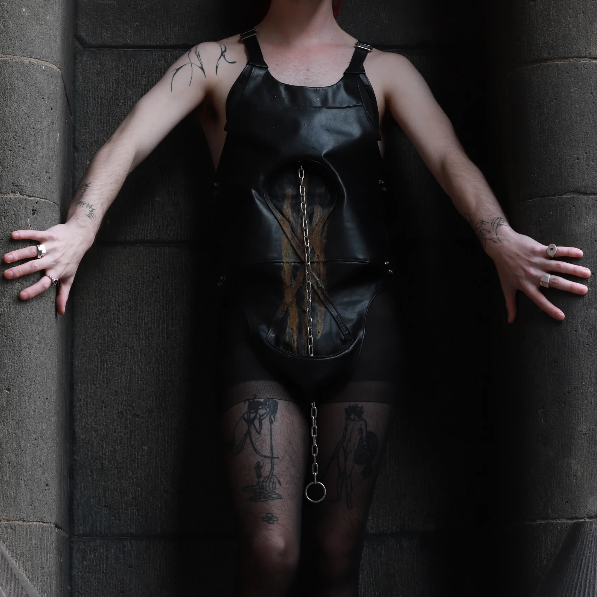
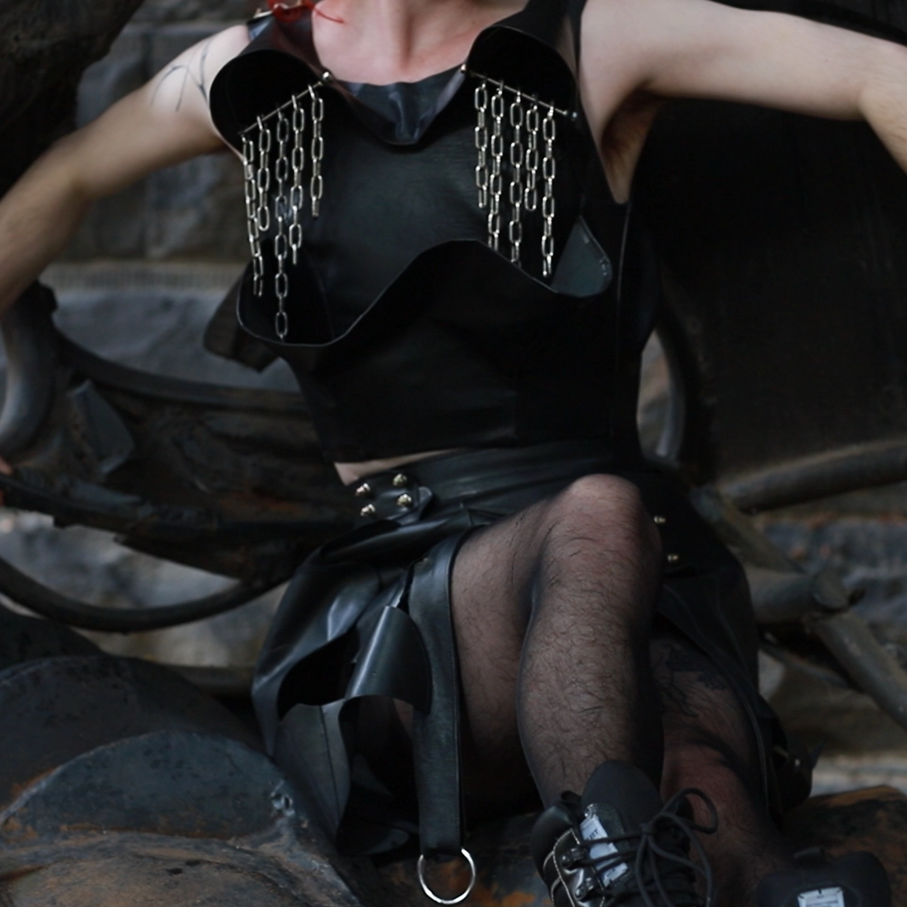
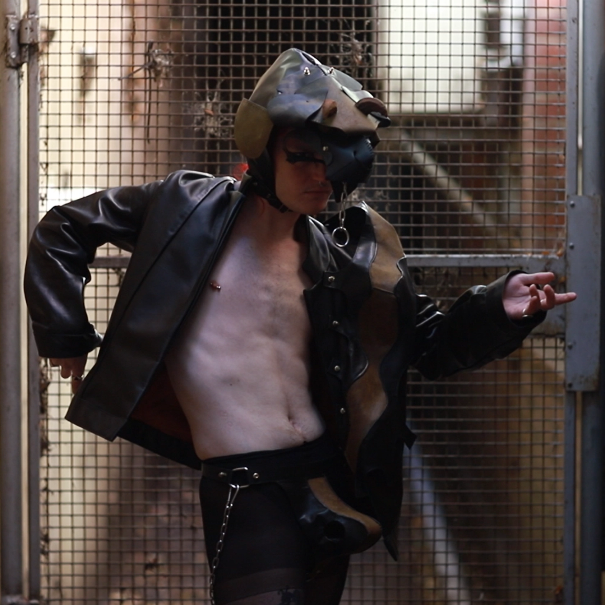

The Gargoyle is an erotic and chasmal amalgam of leather fetish and vaulted ceilings.
This collection is informed by a personal mythology which represents emotional landscapes as stoneflesh. It is a story of impassable walls and ever-patient wells, with the gargoyle itself acting as a translator between each – the carved face between interior and exterior worlds.
The Gargoyle is told through leather, metal, and rust, with forms and fixings that indulge heavily in fetish subcultures and industrial sensuality.
The collection is presented as a film, made in collaboration with Ru Elliott, Dwayne Tillman, Rebecca Jordan, and Bailey Wall. Special thanks to Dr. Daniel R Marks for all their guidance and enthusiasm! The project was made and filmed in Naarm, on Wurundjeri and Bunurong land.


The Reach Bodysuit

Maw and Scraps

Gargoyle, Crawler, and Codpussy